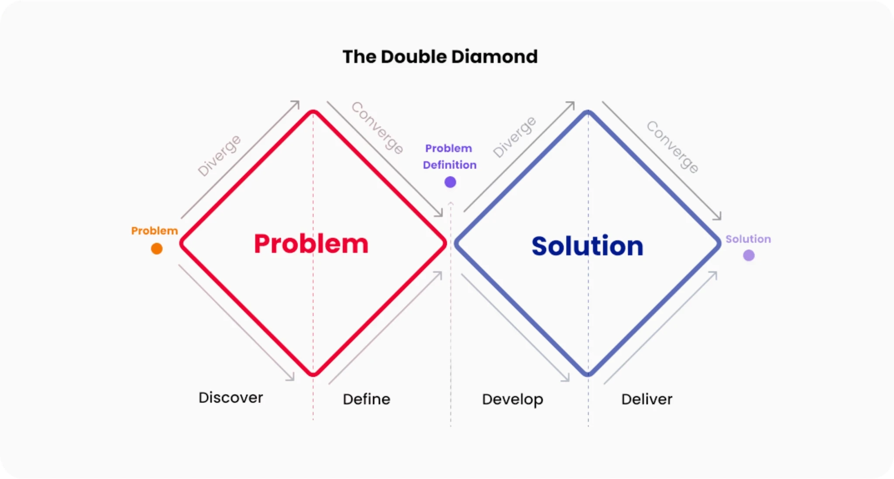

Background & Context
Rightel, one of Iran’s three major mobile operators, serves millions of prepaid and postpaid users. My Rightel is the primary self-service channel for checking balance, buying packages, renewing subscriptions, and making payments—flows that directly drive revenue and retention.
The project was a systemic overhaul: transforming a fragmented, feature-stacked tool into a cohesive system focused on clarity, speed, and trust. User feedback and internal audits highlighted friction in time-sensitive tasks such as buying a package during a low-balance emergency.
My Role
As lead Product Designer, I owned the redesign from discovery through final delivery.
- Redesigned the Dashboard, Package Purchase, Balance, and Payment journeys
- Built the foundational design system, reusable components, variants, and Figma Variables
- Produced high-fidelity interactive prototypes
- Balanced user needs, business goals, and technical constraints with cross-functional partners
- Conducted design reviews and implementation QA
What changed
- Turned the dashboard into a quick decision surface with prioritized data and direct actions
- Added scannable package cards, instant chip filters, and value badges
- Simplified payment with stronger hierarchy, clear feedback, and credit-limit handling
- Standardized the product logic: understand status → decide → act
- Shipped the best version possible under backend and business constraints while planning for personalization
Problem Definition
The project followed a pragmatic Double Diamond process over six months: three months for the design system and three for the full mobile and web redesign.
Experience audit
I explored the current website and app in realistic scenarios, mapped flows, recorded inconsistencies, and experienced the friction of finding basic information or completing a quick task.
Core pain points
- Unclear balance and usage visibility: information was scattered, preventing a quick “Am I safe?” glance.
- Overwhelming package buying: options lacked context, popularity signals, and decision support.
- Stressful payments: hidden options, confusing errors, and unclear credit-based payment behavior.
- Product-level inconsistency: duplicated patterns, menu dependency, and broken separation between status, decisions, and actions.
Workshops and interviews
Product, engineering, and business stakeholders aligned on priorities before solutions began. Interviews validated the observed issues and revealed the emotional impact of running out of data or encountering payment uncertainty.


Desk Research & Competitor Analysis
My Irancell
Package purchase begins directly from bottom navigation and opens a focused page with Daily, Weekly, Monthly, and All filters. Personalized suggestions and “Best Seller” indicators speed decisions, while progress visuals communicate balance urgency.
Hamrah Man
Contextual package access from the home screen, clear prepaid/postpaid separation, transparent payment options, and detailed usage reports formed useful benchmarks.
Key Findings & Metrics
Key insights
- Account information was fragmented across screens.
- Package selection created unnecessary decision friction.
- Payment lacked transparency at critical moments.
Primary success metrics
- Payment Completion Rate
- Package Purchase Conversion Rate
Secondary metrics
- Time to Decision
- Balance Visibility Rate
- Error Recovery Rate
System Evolution
The core challenge was not missing data, but missing contextual clarity. Users navigated multiple sections to answer a simple question: “Am I running out of data?”
1. Dashboard Experience
Problem: balance and usage existed, but users had to interpret multiple views with no single point of truth.
Solution: centralize critical status, prioritize remaining balance and active package, add progress indicators, and connect status to relevant actions.
Impact: faster at-a-glance understanding, less repeated navigation, and a stronger status-to-action connection.

2. Package Selection
Problem: package selection was disconnected from current usage, and renewal and first-time purchase flows were treated alike.
Solution: reorganize packages, improve scanning and comparison, reduce visual noise, and continue directly from the dashboard context.
Impact: lower drop-off, faster decisions, and a stronger connection between usage and purchase behavior.
3. Balance Experience
Problem: raw numbers showed how much was consumed without explaining what it meant.
Solution: structure total, used, and remaining values; prioritize usage signals; and introduce a Package Usage Report. The experience shifted from showing numbers to explaining consumption.
Impact: lower cognitive load, faster comprehension, greater confidence, and better readiness to purchase.
4. Payment Experience
Problem: details were difficult to verify, options lacked transparency, and users at their credit limit could not continue.
Solution: create a dedicated credit-increase flow, allow in-app credit management, reduce support dependency, and connect it to billing.
Impact: more trust, less abandonment, and clearer outcomes.
Design Trade-offs & Constraints
Displaying remaining credit at payment required an additional backend query, risking slower performance in a conversion-critical flow. Real-time credit therefore could not be shown in the shipped version.
Constraint-driven release
If credit was insufficient, credit payment was hidden and only bank gateways were displayed. This prevented failed payments but made option availability less transparent.
Proposed improvement
A later concept explicitly showed remaining credit, sufficiency, and explanations for available methods, with an Increase Credit action. Further evaluation revealed that this detour would pull users out of checkout, especially postpaid users who first had to settle their bill and repeat the journey.
Final decision
Remove Increase Credit from checkout, keep payment focused on one uninterrupted transaction, and avoid parallel financial flows. Completion rate and continuity were prioritized over offering more options.
The iteration shows why payment design is about more than visibility: it must minimize interruption, respect backend realities, and reduce cognitive and operational friction.
Testing
Pre-launch validation
Interactive prototypes tested information hierarchy, critical-task completion, usage and payment comprehension, and decision confidence. Findings refined interaction patterns before development.
Post-launch validation
Controlled experiments and behavioral analytics would track package conversion, payment completion, critical-flow drop-off, balance-check frequency, and Package Usage Report engagement.
Because these flows directly affect revenue and customer trust, even small interface changes require careful validation before release at scale.